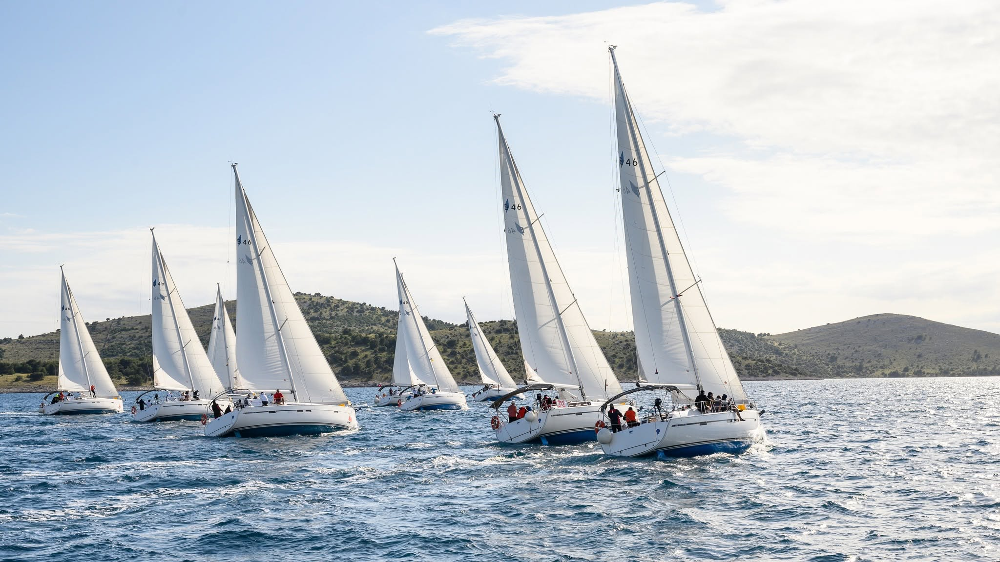
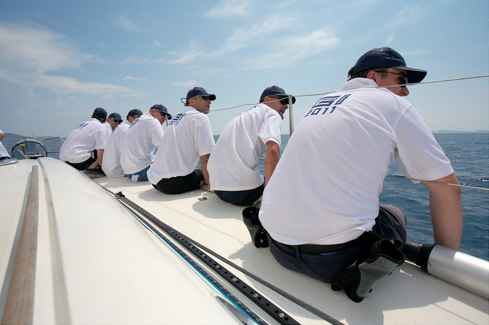
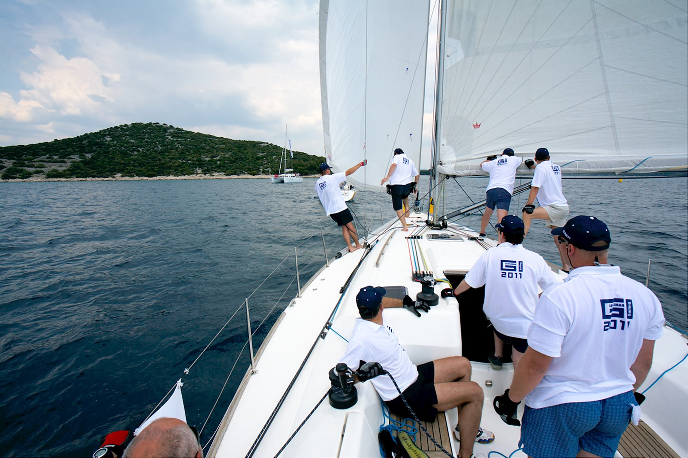
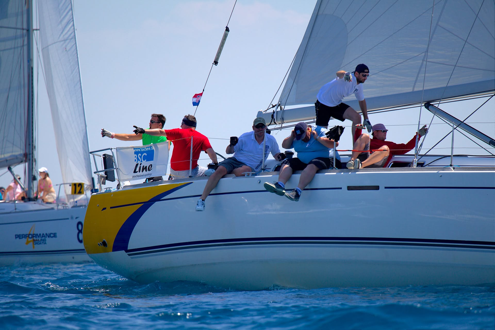
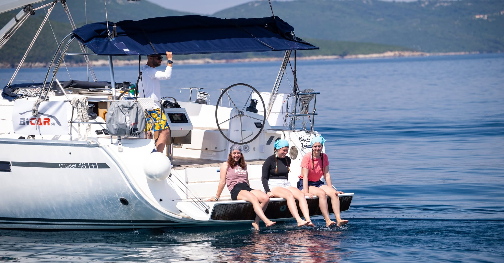

More spája tímy ako nič iné.

Doprajte svojim klientom, obchodným partnerom alebo zamestnancom zážitok, na ktorý sa nezabúda. Gentleman Sailing nie je len regata. Je to priestor, kde sa stretáva súťaživá energia, tímová spolupráca, oddych na mori a atmosféra, ktorá prirodzene vytvára nové vzťahy.
Doterajších 20 ročníkov si užilo viac ako 89 firiem. Posádky zažili napätie pretekov, spoločné večery, nové priateľstvá aj momenty, ktoré v bežnej zasadacej miestnosti nikdy nevzniknú.
Na palube sa rozdiely strácajú. Každý má svoju úlohu, jeden spoločný cieľ a vietor v plachtách, ktorý tím prirodzene posúva dopredu.

Hľadáte výnimočný event pre svojich klientov alebo obchodných partnerov? Gentleman Sailing ponúka prostredie, ktoré spája noblesu jachtingu, krásu chorvátskeho pobrežia a zážitok zo spoločnej plavby.
Firemná regata je ideálnou príležitosťou, ako pozvať klientov do neformálneho, no stále reprezentatívneho prostredia. Na mori vznikajú rozhovory prirodzenejšie, vzťahy sa prehlbujú rýchlejšie a spoločný zážitok zostáva v pamäti omnoho dlhšie ako klasické stretnutie pri stole.
Súťaživá, no priateľská atmosféra na vode, vyhodnotenie, trofeje a spoločný program vytvárajú event, ktorý má štýl, energiu aj emóciu.

Pozvite svojich klientov alebo partnerov na palubu a zažite spolu regatu, ktorá má charakter. Každá posádka sa stáva tímom, každá loď súčasťou súťaže a každý deň prináša nové spoločné momenty.
Firemná regata je vhodná pre spoločnosti, ktoré chcú svojim klientom ponúknuť viac ako len klasický event. Je to zážitok, ktorý spája aktívny program, networking, súťaživosť a výnimočnú atmosféru mora.

Na mori sa tímová spolupráca nedá hrať. Posádka musí komunikovať, reagovať, pomáhať si a spoločne smerovať k cieľu. Práve preto je regata jedným z najsilnejších teambuildingových zážitkov.
Každý člen posádky má svoju rolu. Niekto drží kurz, niekto pracuje s plachtami, niekto sleduje vietor a niekto povzbudzuje tím v správnej chvíli. Spoločne však všetci zažívajú niečo, čo v kancelárii nevznikne — dôveru, spoluprácu a pocit, že sú na jednej lodi.
A to doslova.

Zoberte svoj tím mimo každodenného pracovného prostredia a doprajte mu zážitok, ktorý ho skutočne spojí. Teambuilding na mori nie je len o oddychu. Je o spoločnej zodpovednosti, rozhodovaní, komunikácii a radosti z dosiahnutého cieľa.
Počas regaty sa z kolegov stáva posádka. Každý priloží ruku k dielu a každý je súčasťou spoločného výsledku. Práve preto si tímy odnášajú nielen krásne spomienky, ale aj silnejšie vzťahy, lepšiu komunikáciu a energiu, ktorá pretrvá aj po návrate na pevninu.
Gentleman Sailing vytvára ideálny priestor pre firmy, ktoré chcú svojim klientom alebo zamestnancom ponúknuť niečo výnimočné. More, vietor, plachty a spoločná posádka dokážu spojiť ľudí prirodzenejšie než akýkoľvek štandardný event.
Či už pripravujete reprezentatívne stretnutie pre klientov, odmenu pre obchodných partnerov alebo teambuilding pre interný tím, regata prináša kombináciu zážitku, emócie a spoločného cieľa.
Vytvorte si vlastnú firemnú posádku, pozvite klientov alebo doprajte svojmu tímu teambuilding, ktorý bude mať vietor v plachtách. Pridajte sa k Gentleman Sailing a zažite firemný event, na ktorý sa bude spomínať ešte dlho po návrate z mora.
Prihláška